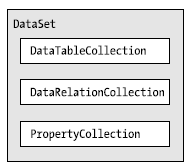

As noted previously, a DataSet is an in-memory representation of relational data. More specifically, a DataSet is a class type that internally maintains three strongly typed collections (see Figure 22-2).
Figure 22-2 The anatomy of a DataSet
The Tables property of the DataSet allows you to access the DataTableCollection that contains the individual DataTables. Another important collection used by the DataSet: DataRelationCollection. Given that a DataSet is a disconnected version of a database schema, you can use it to represent the parent/child relationships programmatically between its tables. For example, you can create a relation between two tables to model a foreign key constraint using the DataRelation type. You can add this object to the DataRelationCollection with the Relations property. At this point, you can navigate between the related tables as you search for data. You will see how to do this later in the chapter.
The ExtendedProperties property provides access to the PropertyCollection object, which allows you to associate any extra information to the DataSet as name/value pairs. This information can be literally anything, even if it has no bearing on the database data itself. For example, you can associate your company’s name to a DataSet, which can then function as in-memory metadata. Other examples of extended properties might include time stamps, an encrypted password that must be supplied to access the contents of the DataSet, a number representing a data refresh rate, and so forth.
Note The DataTable and DataColumn classes also support the ExtendedProperties property
Before exploring too many other programmatic details, let’s take a look at some core members of the DataSet. Table 22-1 describes some additional properties of interest beyond the Tables, Relations, and ExtendedProperties properties.
Table 22-1. Properties of the DataSet
| Property | Meaning in Life |
|---|---|
| CaseSensitive | Indicates whether string comparisons in DataTable objects are case sensitive (or not). The default is false (string comparisons are not case sensitive by default). |
| DataSetName | Represents the friendly name of this DataSet. Typically, you establish this value as a constructor parameter. |
| EnforceConstraints | Gets or sets a value indicating whether constraint rules are followed when attempting any update operations (the default is true). |
| HasErrors | Gets a value indicating whether there are errors in any of the rows in any of the DataTables of the DataSet. |
| RemotingFormat | Allows you to define how the DataSet should serialize its content (binary or XML, which is the default). |
The methods of the DataSet work in conjunction with some of the functionality provided by the aforementioned properties. In addition to interacting with XML streams, the DataSet provides methods that allow you to copy the contents of your DataSet, navigate between the internal tables, and establish the beginning and ending points of a batch of updates. Table 22-2 describes some core methods.
Table 22-2. Select Methods of the DataSet
| Methods | Meaning in Life |
|---|---|
| AcceptChanges() | Commits all the changes made to this DataSet since it was loaded or the last time AcceptChanges() was called. |
| Clear() | Completely clears the DataSet data by removing every row in each DataTable. |
| Clone() | Clones the structure, but not the data, of the DataSet, including all DataTables, as well as all relations and any constraints. |
| Copy() | Copies both the structure and data for this DataSet. |
| GetChanges() | Returns a copy of the DataSet containing all changes made to it since it was last loaded or since AcceptChanges() was called. This method is overloaded, so that you can get just the new rows, just the modified rows, or just the deleted rows. |
| HasChanges() | Gets a value indicating whether the DataSet has changes, including new, deleted, or modified rows. |
| Merge() | Merges this DataSet with a specified DataSet. |
| ReadXml() | Allows you to define the structure of a DataSet object and populate it with data, based on XML schema and data read from a stream. |
| RejectChanges() | Rolls back all the changes made to this DataSet since it was created or since the last time AcceptChanges() was called. |
| WriteXml() | Allow you to write out the contents of a DataSet into a valid stream. |
Now that you have a better understanding of the role of the DataSet (and some idea of what you can do with one), create a new Console Application named SimpleDataSet and import the System.Data namespace. Within the Main() method, define a new DataSet object that contains three extended properties that represent a time stamp, a unique identifier (represented as a System.Guid type), and your company’s name:
static void Main(string[] args) { Console.WriteLine("***** Fun with DataSets *****\n"); // Create the DataSet object and add a few properties. DataSet carsInventoryDS = new DataSet("Car Inventory"); carsInventoryDS.ExtendedProperties["TimeStamp"] = DateTime.Now; carsInventoryDS.ExtendedProperties["DataSetID"] = Guid.NewGuid(); carsInventoryDS.ExtendedProperties["Company"] = "Mikko’s Hot Tub Super Store"; Console.ReadLine(); }
You might be unfamiliar with the concept of a globally unique identifier (GUID); all you need to know is that it is a statically unique 128-bit number. While GUIDs are used throughout the COM framework to identify numerous things (e.g., classes, interfaces, and applications), the System.Guid type remains helpful under .NET when you need to generate a unique identifier quickly.
In any case, a DataSet object is not interesting until you insert any number of DataTables. Therefore, the next task is to examine the internal composition of the DataTable, beginning with the DataColumn type.